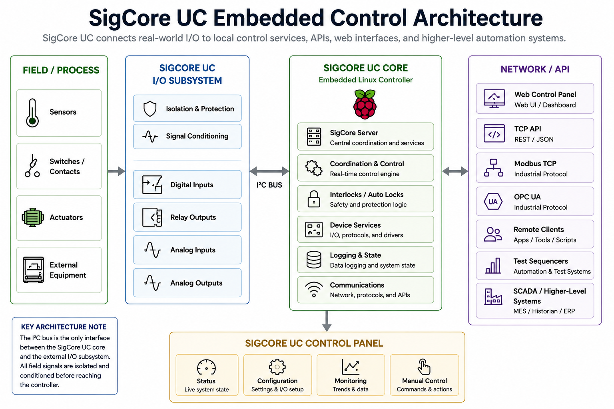

Press Kit
SigCore UC is a flexible industrial automation and control platform designed to help engineers build test systems, instrumentation interfaces, and custom automation solutions faster.
Follow the SigCore UC Launch
SigCore UC is currently in Crowd Supply pre-launch. Follow the campaign to receive launch notifications and project updates.
Follow on Crowd SupplySystem Architecture
SigCore UC combines industrial I/O, embedded Linux services, protocol integration, scripting support, and higher-level automation interfaces into a unified control platform.

Problem
Custom automation projects often require engineers to combine controllers, I/O hardware, scripting environments, protocol gateways, and separate software tools. This slows development and creates unnecessary integration friction.
Solution
SigCore UC brings industrial I/O, programmable control logic, scripting, protocol integration, and embedded deployment into one practical platform, reducing setup time and making custom automation easier to build and maintain.
Key Benefits
- Faster setup for test systems and industrial automation
- Reduced integration complexity
- Flexible control logic for custom workflows
- Useful for instrumentation, monitoring, and equipment control
- Designed for practical, adaptable automation
Example Applications
- Environmental and thermal test systems
- Laboratory automation
- Instrumentation control
- Industrial monitoring
- OEM equipment integration
- Custom manufacturing workflows
Press Images
High-resolution product images are available for download. Click any image to open the full version.


Technical Highlights
- PID CONTROL: Built-in industrial-grade PID loops for closed-loop process control.
- SIGNAL CONDITIONING: All I/O fully conditioned and ready for direct use.
- 8 RELAY OUTPUTS: Isolated relay outputs rated for 120VAC / 10A with NO/NC terminals.
-
8 DIGITAL INPUTS:
- VIN > 2VDC = ON
- VIN < 1VDC = OFF
-
4 ANALOG INPUTS:
- 0–5VDC
- 0–10VDC
- 0–500mV
- 4–20mA
-
4 ANALOG OUTPUTS:
- 0–5VDC output
- PWM output support
- CONTROL SOFTWARE: Ethernet and USB connected monitoring, calibration, and configuration software.
- PROGRAMMING: Python, .NET, and LabVIEW APIs with example code and documentation included.
Why This Is Different
SigCore UC is designed for engineers who need to build real automation systems quickly, without stitching together separate PLCs, protocol gateways, scripting environments, and custom software from scratch
It focuses on faster setup, practical integration, and flexible control for test systems, instrumentation, and industrial automation.
Unlike traditional PLC or DAQ setups, SigCore UC combines industrial I/O, scripting, monitoring, calibration tools, and protocol integration into a single compact platform that is easy to deploy, maintain and expand.
About en Z em
en Z em develops embedded systems, industrial automation, and test-system technologies focused on practical real-world engineering applications.
The company was founded by engineer Edward Schmitz with a focus on creating flexible, approachable automation tools that reduce integration complexity and accelerate custom system development.
SigCore UC was designed to bridge the gap between industrial control hardware, instrumentation, scripting, and modern software integration.
Product Demonstration
Demonstration video showing SigCore UC hardware and software operation.
Press Availability
Evaluation units of SigCore UC are available for members of the press. I am also available for interviews or to provide additional product details.
Contact Me